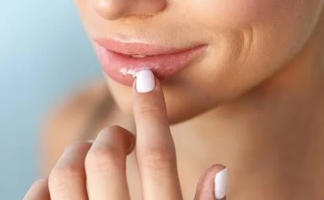
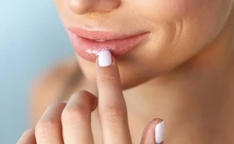

HIGENE PERSONAL
La higiene personal y el cuidado diario pueden ser resueltos de un modo amoroso con el cuerpo y el planeta. Podemos realizar preparados sólidos que cumplan todas nuestras expectativas en un marco de consciencia integral. Las formulaciones que elegí desarrollar en este manual son simples, concentran en ellas el poder terapéutico de las plantas y permiten ser adaptadas a gustos, necesidades o creatividad de quien las realice. Muchos de los ingredientes son comunes a todos los preparados, esto tiene como ventaja el bajo costo para realizarlos y el desarrollo practico del aprendizaje, según los gustos y necesidades personales, sin sujetarse a recetas sino que pueden realizarse las propias. La mejor manera de disfrutar el proceso es con una lectura detallada tratando de integrar los conceptos
COSMETICO NATURAL
Cosmético se considera a todo producto exclusivamente de “uso externo”. Para considerarse natural un mínimo del 90% de sus ingredientes deben ser naturales o de origen natural. Se prioriza el uso de ingredientes orgánicos, libres de pesticidas o de recolección en huertos particulares. NO se incluyen materias primas, especialmente compuestos químicos, sobre los que existen dudas sobre su inocuidad para el medio ambiente o la salud de las personas, algunos ejemplos son los derivados del petróleo, aceites minerales, vaselina, parabenos conservantes, perfumes artificiales, etc. Se pueden utilizar ingredientes de origen animal, siempre y cuando no requiera lastimar, amputar, matar al espécimen de procedencia, tampoco se realizan testeos sobre ellos. Y en mi opinión para que sea totalmente coherente, los procesos de transformación y elaboración deben ser respetuosos con el medio ambiente. Empaques eco-responsables, reciclables o biodegradables
 

Balsamo Labial
Como quitar las arrugas
Shampoo solido
¿Piel seca?
¿Piel grasa?
Acondicionador Solido